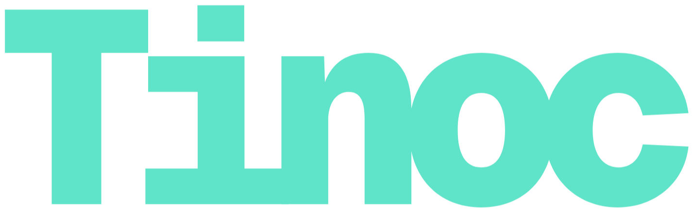

A systems language that compiles to C99. Errors, optionals, generics, and compile-time metaprogramming are first-class, with no runtime to carry.
#import std.io;
fn main() void {
var name str = "Prathmesh";
const lang = "Tinoc";
io.println("{s} is creator of {s} Programming Language!", name, lang);
}
main.tnc — watch it transpileTinoc respects C and its ecosystem. These principles shape every design decision.
Code states its intent. Names, syntax, and structure say what they mean.
Types capture the contract. Sizes, optionals, and errors are explicit and checked.
Compile-time checks for the cases C leaves to chance: overflow, nulls, and errors.
Compiles to C99 with no runtime. What you write is what the machine runs.
A small, composable core. One way to read a loop, one way to make a type.
Each feature addresses a known weakness of C while keeping its performance and control.
Your .tnc files compile to portable C99 with one small runtime header. It runs anywhere a C99 compiler is available.
i8 → i128, u8 → u128, f32/f64/f128, str, slices, optionals, error unions, and generics.
if, while, switch, and for without parentheses. |i| capture bindings. orelse, catch, and ? for safe unwraps.
#import resolves modules at comptime, #run executes code during compilation, #partial tracks enum switch coverage.
std.io, std.math (inf, nan, and other constants), and std.collections with vec:T, map:(K,V), set:T, and hstr.
Developed in public on GitHub. The syntax, compiler, and docs are public from day one, and early contributors are welcome.
A struct with methods, a generic Pair:T,
and a range for. Each construct is small, and all of it
compiles to plain C99.
self ^Point. Mutation is explicit, never hidden.:T and :(K, V).|i|, a binding rather than a closure.#import std.io;
struct Point {
x f32;
y f32;
fn translate(self ^Point, dx f32, dy f32) void {
self^.x += dx;
self^.y += dy;
}
}
struct Pair:T {
first T;
second T;
fn swap(self ^Pair:T) void {
var tmp T = self^.first;
self^.first = self^.second;
self^.second = tmp;
}
}
fn main() void {
var p Point = Point { .x = 1.0, .y = 2.0 };
p.translate(0.5, 1.5);
var pair Pair:i32 = Pair:i32 { .first = 10, .second = 20 };
pair.swap();
io.println("{any}", pair);
}Fixed-width integers, floats, strings, slices, optionals, error unions, and heap collections. Sizes and layouts are explicit.
i8 … i128signed integersu8 … u128unsigned integersf32 · f64 · f128floating pointbool · charboolean · codepointstrlength-aware string[N]T · []Tarrays · slices^Tpointers?Toptionals!T · E!Terror unionsvec:Tdynamic arraysmap:(K,V)hash mapsset:Thash setsTinoc is under active development. The compiler, syntax, and tooling are built in public. There is nothing to install yet, but you can follow the work, run the tests, and contribute.
Lexing, parsing, semantic analysis, and C99 emission.
The language reference on this site tracks the compiler feature by feature.
A tinoc CLI: build, run, and transpile .tnc projects.
Prebuilt binaries and package-manager installs land once the compiler stabilizes.
Follow the repository, join the Discord, and take part in design discussions. Every issue and pull request helps.